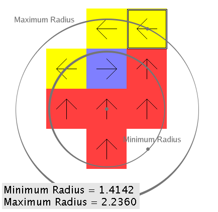
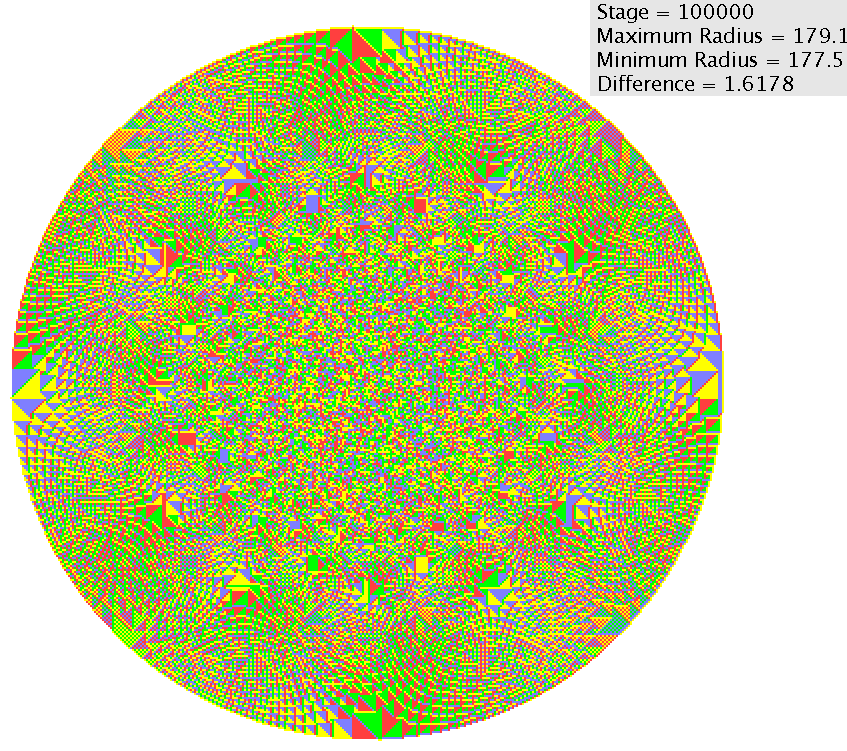

2-D Aggregation
Similar to 1-D Aggregation, but on a 2-D square grid. Each vertex is represented by a square. In the aggregation scenario, all vertices start out empty; once a bug hits an empty vertex, the vertex is filled and it gets a normal rotor on it. Each bug fills exactly one vertex when it reaches an empty vertex. It is interesting that the shape that is created is very round. In fact, if you compare the circle centered at the origin that goes through the filled vertex farthest from the origin and the smallest circle centered at the origin that goes through the empty vertex closest to the origin, the difference is very small.
How the radii are calculated:

The underlying directed graph is an infinite 2-D square graph:
![[graph]](./Images/two-dee-square-digraph.png)
After 100 000 stages. Notice how round it is: 